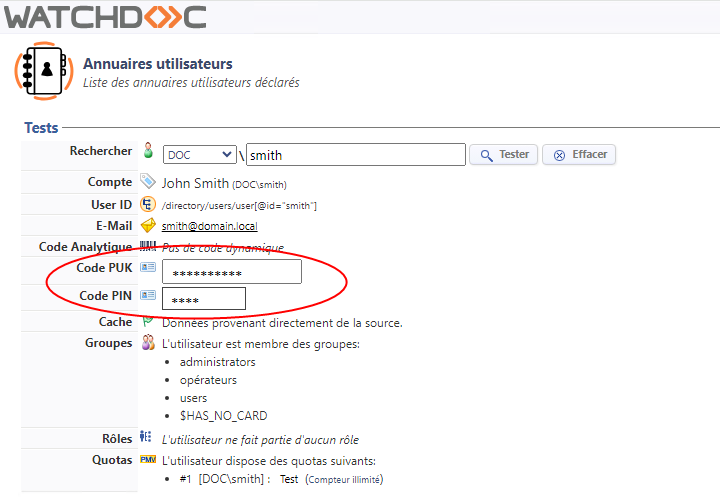

Watchdoc / WSC - Actions rapides
Objectif : permet de vérifier si les WES traces sont activées et de les télécharger, de les activer ou de les désactiver au besoin.
Procédure
-
Depuis le Menu principal, section Exploitation, cliquez sur Files d'impression...
-
Sélectionnez la file concernée.
-
Dans l'interface de gestion de la file, cliquez sur l'onglet Propriétés
Vérification : dans la section WES, la valeur du paramètre WES traces indique le statut des logs : activés ou désactivés. Vous pouvez alors activer, désactiver ou télécharger les logs à l'aide des boutons figurant dans cette section.
Objectif : permet de déterminer la version du .NET Framework installé sur votre ordinateur/serveur.
Procédure :
-
depuis la zone de recherche de la barre des tâches, entrez "regedit"
-
dans l'Editeur du Registre, déployez l'arborescence suivante : Ordinateur\HKEY_LOCAL_MACHINE\SOFTWARE\Microsoft\NET Framework Setup\NDP\v4\Full
-
vérifiez la version affichée dans la colonne Données.
Objectif : permet de soumettre Watchdoc à la Console de Supervision WSC
Procédure
-
Depuis le Menu principal, section Configuration, cliquez sur Configuration avancée.
-
Cliquez sur Configuration Système.
-
Cochez la case de la section Télémétrie (ou case Activer, en fonction de la version).
-
Dans le champ Hôte, indiquez le nom du serveur qui héberge WSC, ainsi que le numéro de port.
-
Cochez la case HTTPS.
-
Validez la configuration.
Vérification : dans WSC, cliquez sur le menu Serveurs et vérifiez que le serveur sur lequel est installé Watchdoc est bien supervisé par WSC (marqueur vert ou orange).
Objectif : Retrouver le numéro de série d'un périphérique d'impression, notamment pour compléter le champ Identifiant du WES dans le profil WES.
Procédure
-
Depuis le Menu principal, section Exploitation, cliquez sur Files d'impression,....
-
Dans la liste des files, cliquez sur la file dont vous souhaitez connaître le numéro de série.
-
Sous l'onglet Etat, section Monitoring, repérez le numéro de séire.
Vous pouvez alors le copier puis le coller dans un autre champ de paramétrage.
Objectif : permet de sécuriser Watchdoc
Procédure :
-
Depuis le Menu principal, section Configuration, cliquez sur Configuration avancée.
-
Cliquez sur Configuration Système.
-
Dans la section Sécurité, paramètre Super Utilisateur, saisissez le nouveau mot de passe.
-
Cochez la case Interdire l'accès depuis le réseau pour obliger l'administrateur à se connecter à Watchdoc depuis le serveur sur lequel il est installé.
-
Cliquez sur Valider pour enregistrer la modification.
Vérification : relancez Watchoc et tentez de vous y authentifier avec l'ancien mot de passe. Un message vous informe que le mot de passe est incorrect.
Objectif : permet qu'une file ne soit pas prise en compte par WPC for Windows
Procédure :
-
Depuis le Menu principal, section Exploitation, cliquez sur Files d'impression, emplacements, groupes de files & pools.
-
Dans la liste des files, repérez la file à exclure et cliquez sur le bouton
 pour éditer ses propriétés.
pour éditer ses propriétés. -
Dans la section Plateforme, paramètre Tags supportés, saisissez le tag !WIN32
-
Cliquez sur Valider pour enregistrer la modification apportée au paramétrage de la file.
Vérification : lancez WPC for Windows et vérifiez que la file exclue ne figure plus dans la liste des files d'impression installées
Objectif : lorsque l'impression à la demande interserveur est activée et configurée, permet aux utilisateurs de s'authentifier sur le WES et de débloquer leurs impressions en attente même si la base de données interserveur est en panne.
Procédure :
-
Depuis le Menu principal, section Configuration, cliquez sur Configuration avancée.
-
Cliquez sur Configuration système.
-
Dans la section Impression interserveur, activez le Cache et indiquez la durée du fusible.
-
Valider la configuration du serveur.
Vérification : lancez une impression, arrêtez la base de données interserveur et vérifiez que vous arrivez à vous authentifier sur le WES puis à débloquer l'impression lancée avant l'arrêt de la bdd.
Objectif : permet d'imprimer en mode "livret"
Procédure :
-
Depuis le gestionnaire d'impression MS Windows (print manager), sélectionnez l'imprimante sur laquelle vous souhaitez activer l'option Livret.
-
Cliquez sur Propriétés.
-
Cliquez sur l'onglet Avancées.
-
Cochez la case Activer les fonctionnalités d'impression avancées.
-
Cliquez sur OK pour valider le paramétrage.
Vérification : lancez l'impression d'un document d'au-moins 4 pages. Dans les options d'impression > onglet Finition, vérifiez que vous disposez de l'option Mise en page livret.
Objectif : permet de masquer les codes d'identication (PUK, PIN, etc.) aux opérateurs en charge de gérer les comptes utilisateurs dans l'annuaire. Les codes sont alors remplacés par des étoiles.
Depuis la version 6.1.4926, les codes d'identification (PUK, PIN, etc.) sont inclus dans les données couvertes par le rôle d'administration "Visualisation des identités des utilisateurs".
Procédure :
-
accédez à l'interface d'administration de Watchdoc en tant qu'administrateur ;
-
depuis le Menu principal, section Gestion, cliquez sur Droits d'accès ;
-
dans la liste des rôles d'administration, vérifiez que le rôle Visualisation des identités des utilisateurs ne s'applique pas aux opéateurs ;
-
déconnectez-vous de l'interface d'administration de Watchdoc ;
-
reconnectez-vous à l'interface d'administration de Watchdoc en tant qu'opérateur ;
-
depuis le Menu principal, section Configuration, cliquez sur Annuaires utilisateurs ;
-
cherchez un utilisateur dans l'un des annuaires ;
-
vérifiez que le ou les codes d'identification sont remplacés par des astérisques :
